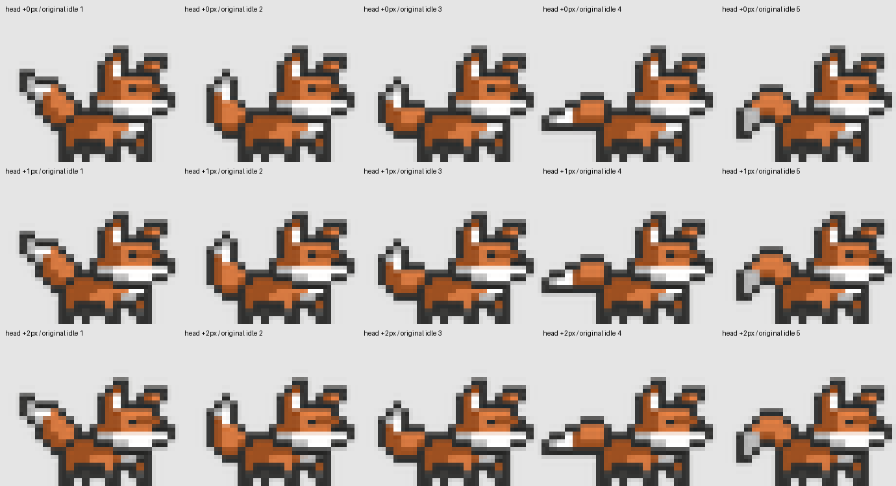

Кандидат для художественного просмотра. «Погладить» опускает голову и прикрывает глаз. Хвост продолжает обычный исходный idle с той же скоростью и фазой: поглаживание не останавливает и не перезапускает его.
Голова движется на 1–2 исходных пикселя. Уши следуют за головой. Тело и лапы сохраняют исходную idle-позу текущего кадра. Пробник не подключён к программе.
Исходный цикл 1→2→3→4→5, 264 мс на кадр.
46 × 37 и 6× nearest-neighbor
Непрерывный хвост и реакция головы
Загрузка изображений…
Все 15 сочетаний головы и хвоста · APNG 1× — один пример жеста · APNG 8× — один пример жеста · Проверки и тайминг · Сборка · Оригинальные idle/lie/walk
APNG показывает один жест с непрерывными исходными фазами хвоста; после конца файл останавливается. В интерактивном просмотре выше обычный idle продолжается.

v3: только моргание · v1 · v2
Разбор и статус · Аудит оригиналов · История генераций
Браузерная проверка недоступна; изображения и логика времени проверены отдельно. Художественное принятие ожидается.